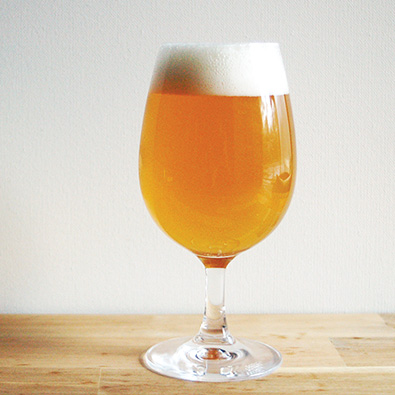

Sunshine Pale Ale: Azzaca
ABV: 5%
Malts: Pilsner, Pale Malt, Wheat, Munich, Oats
Hops: Columbus, Azacca
Yeast: Vermont
Serving: Draft
Description:This is my house pale ale that I keep on tap throughout the year. I focus on one hop variety in the whirlpool and also good amount of dry hop.
Tasting Notes:Silky mouthfeel from the oats with an apricot and peach flavor from the VT yeast. Hop aroma ranges from tropical to citrus, leaning more towards the citrus side of things. Solid beer and great hop for a pale ale.